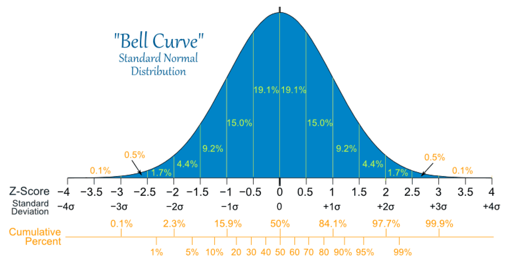
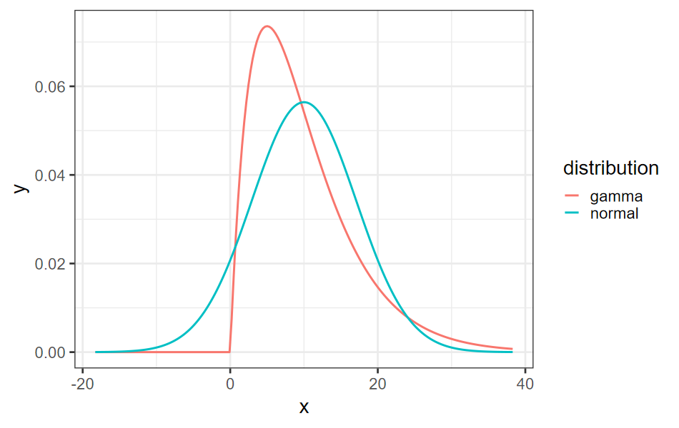
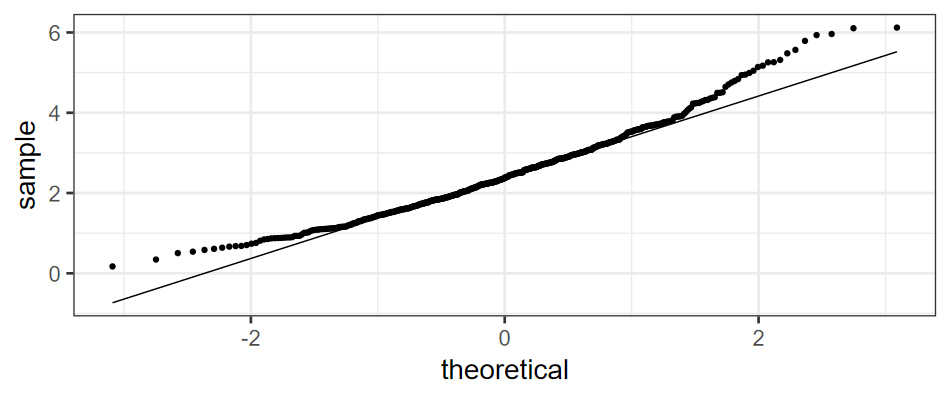
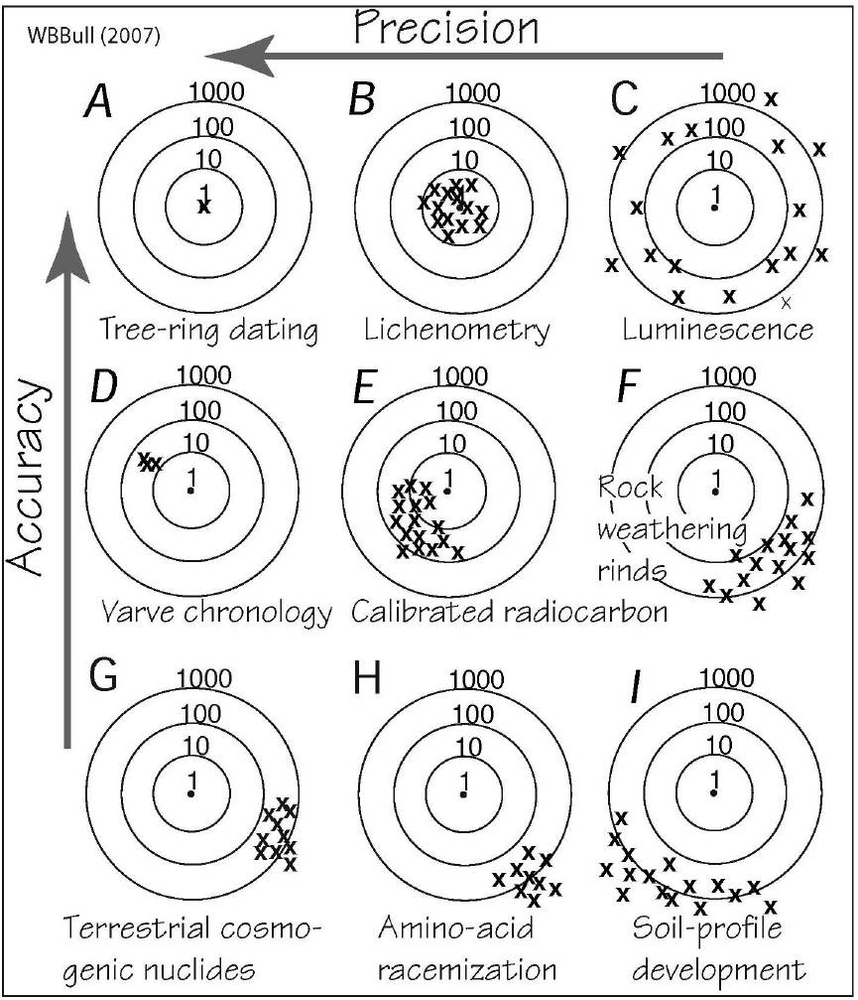

Binomial \(\rightarrow\) Poisson:
\[ \begin{align} X &\sim \mathcal{B}(n, p) \\ \mathbb{P}(X = k) &= \left(n \atop k\right) p^k (1 - p)^{n - k} \end{align} \]
\[ \mathbb{P}(X = k) \rightarrow e^{-\lambda}\,\frac{\lambda^k}{k!} \]
Go to the GitHub Classroom Project at https://classroom.github.com/a/HNhvi1g2
Create a new RStudio project using version control, from the GitHub Classroom assignment.
Set up parameters and variables:
Data: \(N\) points
Sort the sample from smallest to largest
Standardize the sample:
\[ z_i = \frac{x_i - \overline x}{\text{sd}(x)} \]
Calculate \(w_1, w_2, \ldots, w_N\), the \(N\) quantiles of the normal distribution

mu <- k * theta
sigma <- sqrt(k) * theta
spread <- 4 * sigma
df_norm_gam <- tibble(
x = seq(mu - spread, mu + spread, length.out = 200),
gamma = dgamma(x, shape = k, scale = theta),
normal = dnorm(x, mu, sigma)
) |>
pivot_longer(gamma:normal, names_to = "distribution",
values_to = "y")
ggplot(df_norm_gam, aes(x = x, y = y, color = distribution)) +
geom_line(size = 1)


Common Model:
\[ \begin{align} \text{Measurement} &= \text{``true value''} + \text{error} \\ x &= \mu + \varepsilon, \end{align} \]
where \(\varepsilon \sim \mathcal{N}(0, \sigma)\).
You measure two variables, \(X\), and \(Y\)
Covariance:
\[ \begin{align} \text{Cov}(X, Y) &= E(\: (X - E(X)) \, (Y - E(Y))\:) \\ \text{Cov}(X, X) &= E(\: (X - E(X)) \, (X - E(X))\:) \\ &= E(\: (X - E(X))^2\: ) \end{align} \]
If \(X\) and \(Y\) are independent, then \(\text{Cov}(X,Y) = 0\).
If \(\text{Cov}(X,Y) = 0\), \(X\) and \(Y\) might not be independent!
where \(\Delta X\) and \(\Delta Y\) are independent, then
the error on \(X + Y\) and \(X - Y\) will both be
\[ \Delta(X + Y) = \Delta(X - y) = \sqrt{ (\Delta X)^2 (\Delta Y)^2 } \]
the error on \(X \times Y\) will be
\[ \frac{\Delta(XY)}{XY} \approx \frac{\Delta X}{X} + \frac{\Delta Y}{Y} \] and
\[ \frac{\Delta(X/Y)}{X/Y} \approx \frac{\Delta X}{X} + \frac{\Delta Y}{Y} \]
test-central-limit-theorem.qmd